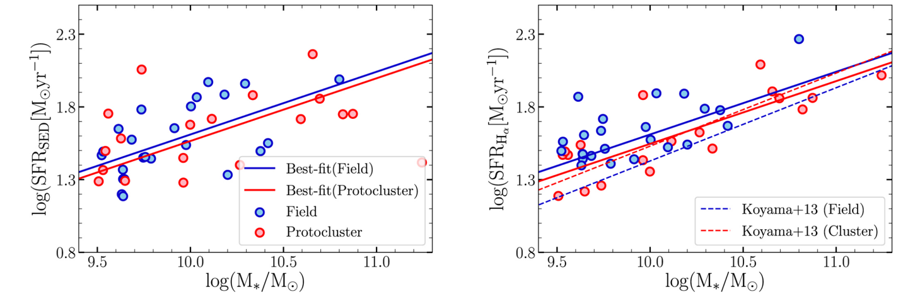

Galaxy Formation & Evolution
Our research focuses on understanding how galaxies form and evolve over cosmic time through detailed spectroscopic analysis and innovative observational techniques. Using multi-waveband surveys and cutting-edge data analysis methods, we investigate the fundamental processes that shape galaxy populations across the universe.
Statistical Properties of Galaxies
Using multi-waveband surveys, we have studied the stellar mass function of galaxies (number of galaxies with a given stellar mass per volume) and their evolution with redshift. This is used to study the mass assembly of galaxies and estimate the number density of most massive galaxies out to the re-ionization epoch. We also find the epoch when the most efficient mass build-up took place.

Figure 1: Evolution of mass function of galaxies with cosmic time (Shuntov et al. 2025). Quiescent (red) and star-forming (blue) galaxies show distinct evolutionary tracks.
Key Publications
- Dahlen et al.
- Shuntov et al.
- Weaver et al.
- Maxmillan et al.
Scaling Relations
Scaling relations are defined as the relation between different observables in galaxies—for example, mass-star formation and mass-metallicity relations. These are used to study the evolution of galaxies. We use these relations to investigate the origin of the observable parameters in galaxies and understand the physical processes driving galaxy evolution.

Figure 2: Stellar mass vs. star formation rate in galaxies in field (blue) and clusters (red). The SFRs are based on Balmer lines (Hα) and fitting of the spectral energy distributions (Sattari et al.).

Figure 3: Stellar mass vs. Metallicity relation for field (blue) and cluster (red) galaxies (Sattari et al.).
Key Publications
- Sattari et al.
- Shivaei et al.
Kpc-scale Study of Galaxies
By studying pixel-scale properties of galaxies, we investigate if the relations found from global properties of galaxies, based on their integrated light, hold at small spatial scales. This has major implications for understanding galaxy formation. We investigate this by performing SED fitting to individual pixels, measuring the physical properties of galaxies per pixel element. Then we derive the distribution of stellar mass, star formation rate, and dust across a galaxy. We explore if the observed (integral) relations in galaxies are first developed at kpc scales inside the galaxies, producing 2-D images of photometrically measured parameters—similar to what we get from Integral Field Units.

Figure 4: 2-D pixel scale distribution of stellar mass, star formation rate, and extinction across a galaxy, along with the radial profiles.
Key Publications
- Jafariyazani et al.
- Hemmati et al.
- Sattari et al.